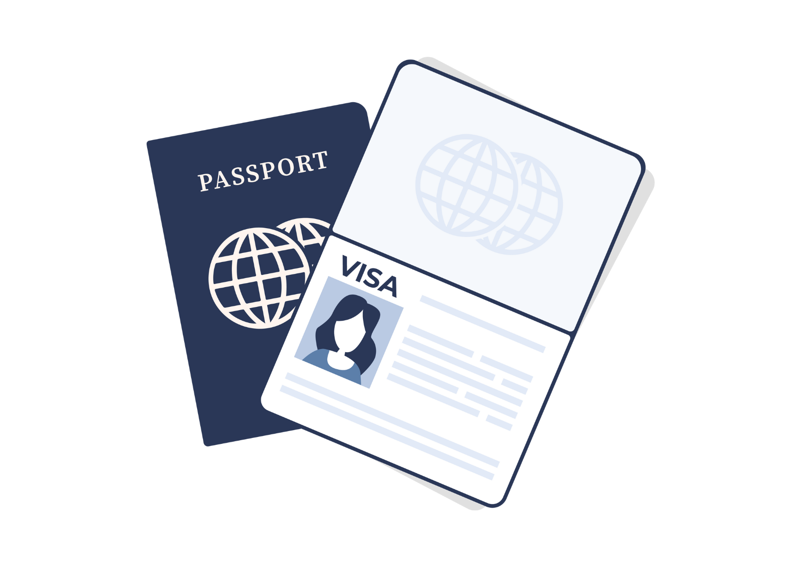
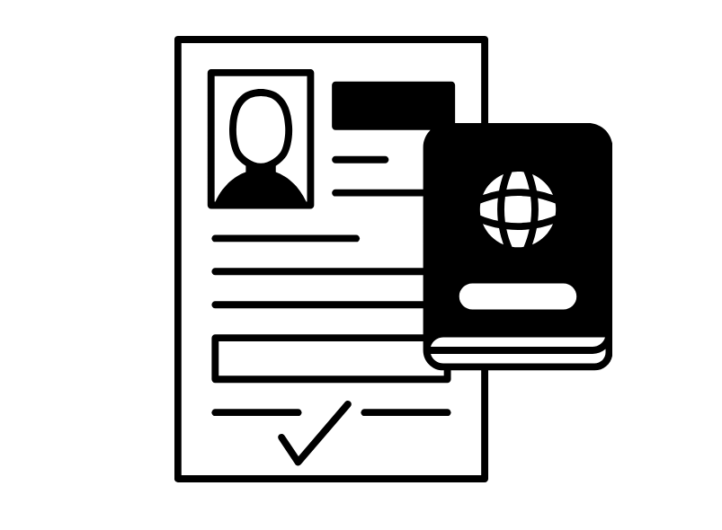
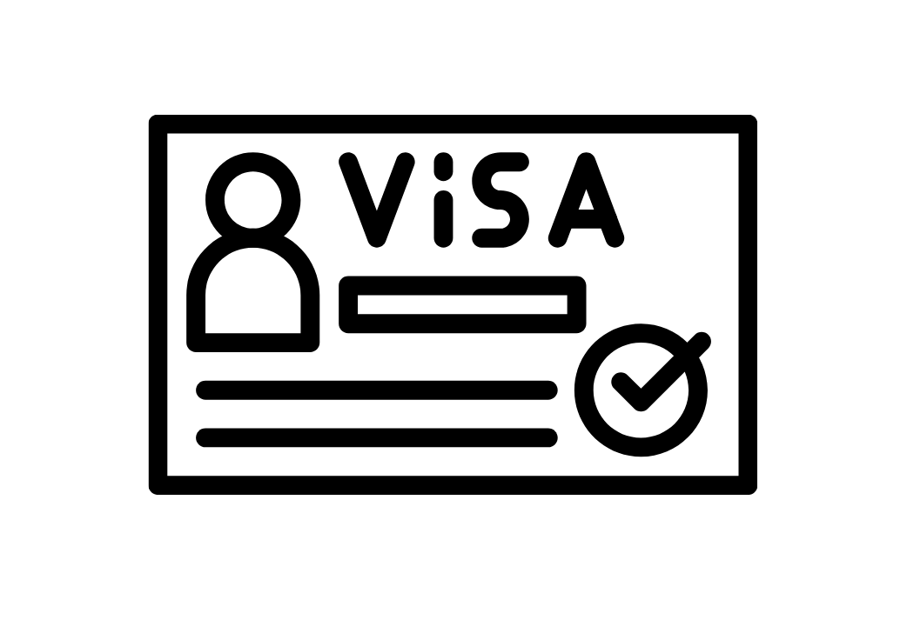
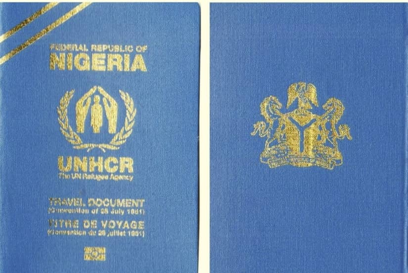
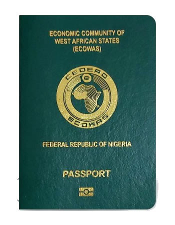

How can we help?

Permanent Residence Visa (PRV)
Short Visit Visa (Embassy)

Short Visit Visa (e-Visa)

Temporary Residence Visa (TRV)

Convention Travel Document

Standard Passport
How can we help?

Permanent Residence Visa (PRV)
Short Visit Visa (Embassy)

Short Visit Visa (e-Visa)

Temporary Residence Visa (TRV)

Convention Travel Document

Standard Passport
Permanent Residence Visa (PRV)
Which visa categories fall under the Permanent Residence visa category?
Can dependants over 18 or aged parents work in Nigeria?
What if I have dependants?
Can I extend or renew my Permanent Visa?
What are the general requirements for Permanent Visas?
Can I work in Nigeria on a Permanent Visa?
Do Permanent Visas lead to Nigerian citizenship?
Can I switch from a different Nigerian visa type to a Permanent Visa?
Do I need a police clearance certificate for a Permanent Visa?
Short Visit Visa (e-Visa)
Who can I contact for more information or help?
How do I apply for an e-Visa?
How can I verify that I am using the official e-Visa platform?
What documents are required for an e-Visa application?
Can I switch to a long-term visa or work permit after entering Nigeria on an e-Visa?
How do I pay the e-Visa fee?
Can my family or group apply for an e-Visa together?
Who is eligible for the Nigeria e-Visa?
How do I receive my e-Visa once approved?
Which Nigerian visa categories are available via e-Visa?
How do I receive my e-Visa once approved?
What is the Nigeria e-Visa?
Can I extend my e-Visa once in Nigeria?
Short Visit Visa (Embassy)
Temporary Residence Visa (TRV)
Who is eligible for a TRV?
Which visas fall under TRVs
What is the process for obtaining a TRV?
What is a Temporary Residence Visa (TRV)?
What if my family or I need extra time beyond the permit duration?
How long can I stay in Nigeria on a TRV?
How do I regularize my stay after arriving?
Can my family join me under a TRV?
Can I study in Nigeria on a TRV?
Can I change employers while on a TRV?
Are there any restrictions on re-entry with a TRV?
Are TRVs extendable or renewable?